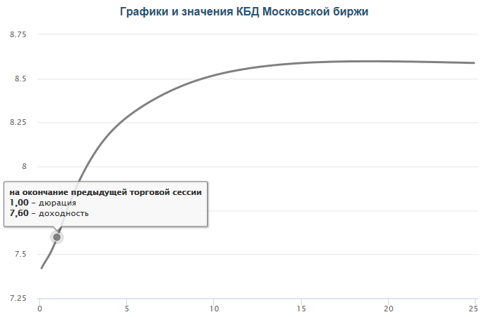

Рядовой инвестор на российском рынке зачастую ограничен в доступе к наиболее полной информации об интересующих его компаниях и к мощным вычислительным инструментам, позволяющим ее обработать. Кроме того, для оценки кредитного качества эмитента на экспертном уровне необходим набор специфических компетенций, овладение которыми занимает немалое время.
Однако в вопросе частных инвестиций зачастую сложные вычисления не требуются. Сравнительно небольшие суммы инвестирования позволяют сформировать достаточно ликвидный портфель из небольшого числа бумаг хорошо известных эмитентов. Отсутствие необходимости слишком широкой диверсификации позволяет сфокусироваться на более прозрачных компаниях и упрощает задачу мониторинга их финансового состояния.
При оценке кредитного риска частному инвестору необходимо ответить на два основных вопроса: готов ли он принять на себя конкретный риск ради конкретной предлагаемой доходности и если да, то какую долю в портфеле стоит выделить с учетом всех факторов?
По надежности эмитента бумаги на российском рынке можно условно разделить на следующие категории:
Облигации Федерального займа ОФЗ – максимально надежные бумаги на российском долговом рынке. Эмитентом является государство, которое гарантирует выплату по данным обязательствам. В настоящий момент Россия имеет высокий запас прочности в виде золотовалютных резервов, так что сомневаться в платежеспособности оснований нет.
Муниципальные облигации с высоким рейтингом и корпоративные бумаги квазигосударственных компаний. К этой категории относятся бумаги субфедеральных и муниципальных образований, а также облигации госкомпаний, которые даже в случае финансовых проблем с большой вероятностью получат государственную поддержку. Эти бумаги также считаются высоконадежными, но все-таки чуть более рискованными, чем ОФЗ, что отражается в более привлекательной доходности. Такие облигации имеют очень небольшой спред к сопоставимым по дюрации выпускам ОФЗ.
Остальные корпоративные и муниципальные облигации. Этот сегмент является более рискованным, но и более доходным. Эти облигации представляют наибольший интерес для оценки кредитоспособности. Если удастся найти компанию, которая имеет недооцененный рейтинг и поэтому предлагает более высокую доходность, то ее облигации могут стать очень хорошей инвестицией.
Преддефолтные облигации. Самые рискованные облигации, которые частному инвестору лучше обходить стороной. Доходность по этим выпускам резко отличается от средней по рынку в большую сторону, а о проблемах компании часто можно легко узнать по публикациям в СМИ.
Стоит помнить, что в ликвидных облигациях очень низкий уровень неэффективности по соотношению риск/доходность. Иными словами, рыночная информация оперативно учитывается в рыночных котировках и чем выше доходность по облигации, тем выше риск вложений в нее.
Доходность облигации складывается следующим образом:
Доходность = безрисковая ставка + премия за риск
Для российского рынка безрисковой ставкой считается доходность государственных ОФЗ. Чем выше доходность облигации относительно соответствующего участка кривой бескупонной доходности ОФЗ (G-кривой), тем выше связанный с ней риск.
Подробнее о том, что такое кривая бескупонной доходности, как она строится и что означает, читайте в специальном материале О чем говорит кривая доходности ОФЗ
На графике G-кривой, который можно найти на сайте Мосбиржи, по оси Х указана дюрация, а по оси У – соответствующая доходность. Чтобы оценить премию за риск, сравните доходность интересующего вас выпуска облигаций с доходностью соответствующей по дюрации точки на графике. На рисунке ниже долговым бумагам с дюрацией 1 год соответствует безрисковая доходность 7,6%.
При текущем уровне рублевых ставок (январь 2019 г.) премия за риск в пределах 1-1,5% условно указывает на достаточно высокую надежность рассматриваемого выпуска.
Премия за риск 1,5-3% говорит о том, что инвесторы учитывают ряд рисков, которые могут реализоваться в случае ухудшения рыночных условий. Однако пока прогнозы таких ухудшений не подразумевают и рынок не требует чересчур высокой доходности.
Премия за риск 3-5% должна насторожить инвестора. Необходимо подробно изучить финансовую ситуацию компании, чтобы понять, почему инвесторы требуют по ней такую высокую доходность. Возможно, компания уязвима к каким-либо рыночным событиям и угроза их наступления представляется вполне реальной.
При премия за риск более 5% необходимо максимально внимательно изучить ситуацию с финансовым положением компании и причиной высокой доходности. В случае малейших сомнений лучше отказаться от таких инвестиций.
Стоит отметить, что приведенная классификация является условной. В некоторых отраслях средняя премия за риск может быть выше, чем по рынку в целом. Также спреды могут существенно расшириться в случае потрясений в экономике. Поэтому не стоит буквально воспринимать приведенные выше цифры. Они указаны для формирования примерного представления о данном способе оценки рисков.
Также стоит учитывать ряд технических нюансов. На сроках до полугода метод оценки спреда малоинформативен, так как облигации с высоким купоном могут давать повышенную доходность при приближении срока погашения. Это связано с тем, что рыночная цена сближается с номиналом.
Кроме того, необходимо удостовериться, что доходность по облигации рассчитана корректно. Для флоатеров и линкеров, доходность которых зависит от внешних факторов, спреды к безрисковой ставке могут отличаться от среднерыночных.
Перед покупкой обязательно ознакомьтесь с кредитными рейтингами, присвоенными эмитенту. Кредитный рейтинг – это подробный анализ кредитного качества эмитента, выполненная за вас квалифицированными специалистами рейтинговых агентств.
Наиболее авторитетными являются международные рейтинговые агентства «большой тройки»: S&P, Moody’s и Fitch, рейтинги которых используют в том числе крупные институциональные инвесторы.
Из-за санкций США в отношении России большинство российских эмитентов, за исключением крупных публичных компаний, не имеют рейтингов от этих агентств. Поэтому для них можно использовать рейтинги национальных агентств АКРА и Эксперт РА. Помимо непосредственного значения рейтинга, на сайте этих агентств можно ознакомиться с кратким обоснованием того или иного значения.
Международные и национальные рейтинговые шкалы различаются. Максимальный рейтинг международных агентств для российских эмитентов ограничен рейтингом РФ, который на январь 2019 г. находится на уровне BBB- по шкалам S&P и Fitch и Ba1 по шкале Moody’s.
К сожалению, на текущий момент даже национальные рейтинговые агентства не охватывают всех российских эмитентов долговых бумаг. Можно рассмотреть отказ от добавления в портфель облигаций, не имеющих рейтингов. Особенно это касается бумаг банков и финансовых компаний, анализ которых является непростой задачей и в запутанной отчетности которых может быть зарыто много негативных «сюрпризов».
Если у эмитента нет рейтинга, но вы провели самостоятельный анализ и уверены в недооценке его облигаций, то можете рассмотреть покупку этих бумаг, но рекомендуется ограничить их присутствие в портфеле небольшой долей. Также в этом случае постарайтесь по максимуму сравнить свое мнение с мнением аналитиков и экспертов, покрывающих данные бумаги.
Для более глубокого понимания надежности компании следует получить более-менее развернутое представление о ее деятельности и ознакомиться с финансовой отчетностью. Не вдаваясь в тонкости, можно предложить обратить внимание на следующие моменты:
- Оцените величину чистого долга компании. Из каких обязательств он состоит и каков график погашения? В какой валюте номинирован? Как соотносится с собственным капиталом? Как соотносится с показателем EBITDA? Для большинства компаний с нормальным уровнем долговой нагрузки показатель чистый долг/EBITDA составляет не больше 3-3,5х.
- Оцените свободный денежный поток эмитента (FCF). Как он соотносится с процентными платежами по долгам, графиком погашения? FCF растет или снижается? Диверсифицированы ли источники доходов компании? Как доходы зависят от цен на сырье/экономических условий? Какова величина ликвидных активов, которые эмитент может при необходимости продать, чтобы погасить задолженность.
- Ближайшие оферты. Предусмотрены ли ковенанты (условия), при которых эмитент обязан выкупить весь выпуск облигаций досрочно? Смоделируйте ситуацию, при которой все инвесторы предъявят свои бумаги к выкупу. Хватит ли у эмитента средств на выкуп в такой ситуации? Может ли он погасить долг за счет запасов наличных средств или продажи каких-то ликвидных активов?
- Угрожают ли компании политические/судебные риски? Может ли компания рассчитывать на финансовую поддержку со стороны мажоритарного акционера/государства? Зависит ли компания от крупных поставщиков/клиентов? Кто является крупным кредитором компании и как он может повести себя в случае угрозы технического дефолта?
Не стоит инвестировать все средства в одну облигацию или в разные облигации одного и того же эмитента. Диверсифицируйте вложения по эмитентам и отраслям. Бумагам эмитентов с более низким кредитным качеством выделяйте меньшую долю, чем бумагам с более высоким уровнем надежности.
Не стоит также оставлять свой портфель без присмотра, если только это не инвестиции, требующие внимания раз в 5 лет. Довольно часто новости о появлении рисков ухудшения финансового положения эмитента появляются гораздо раньше технического дефолта. Будьте в курсе новостей и следите за выходом отчетности эмитентов. При появлении тревожных сигналов стоит внимательно изучить ситуацию, ознакомиться с мнением экспертов по данному вопросу и пересмотреть долю облигаций проблемного эмитента в своем портфеле вплоть до исключения.